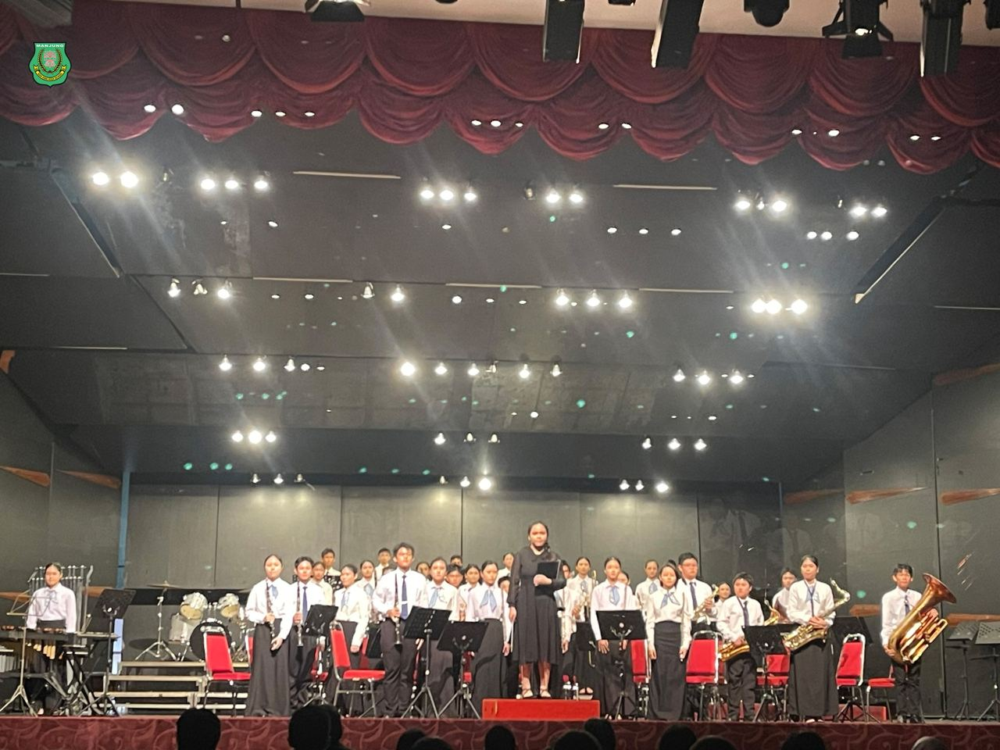
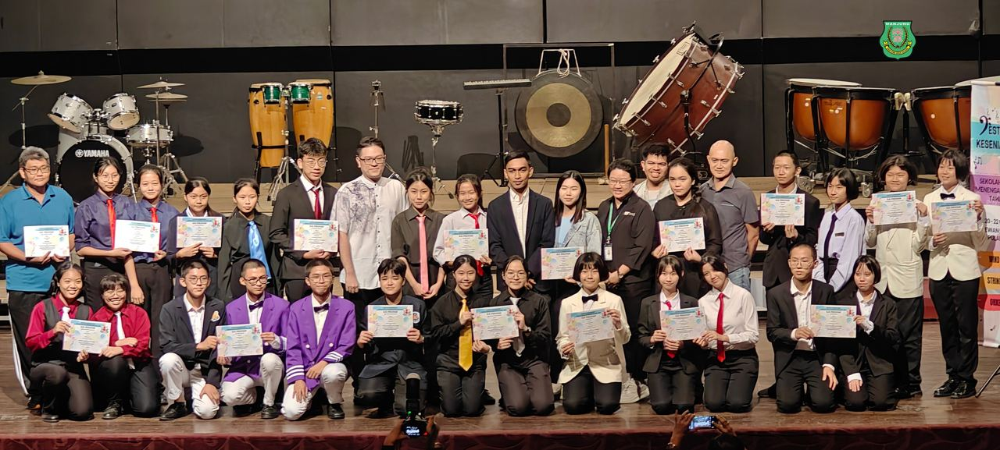
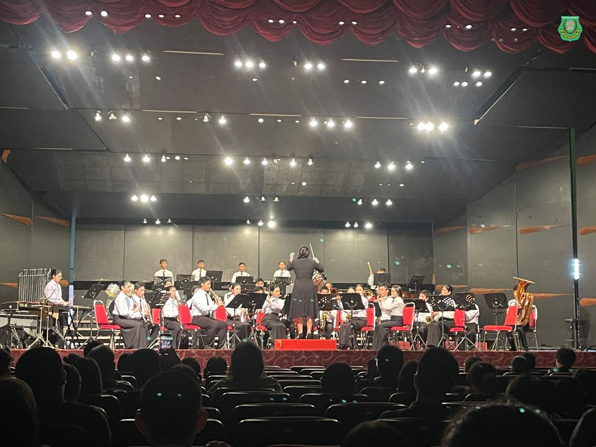
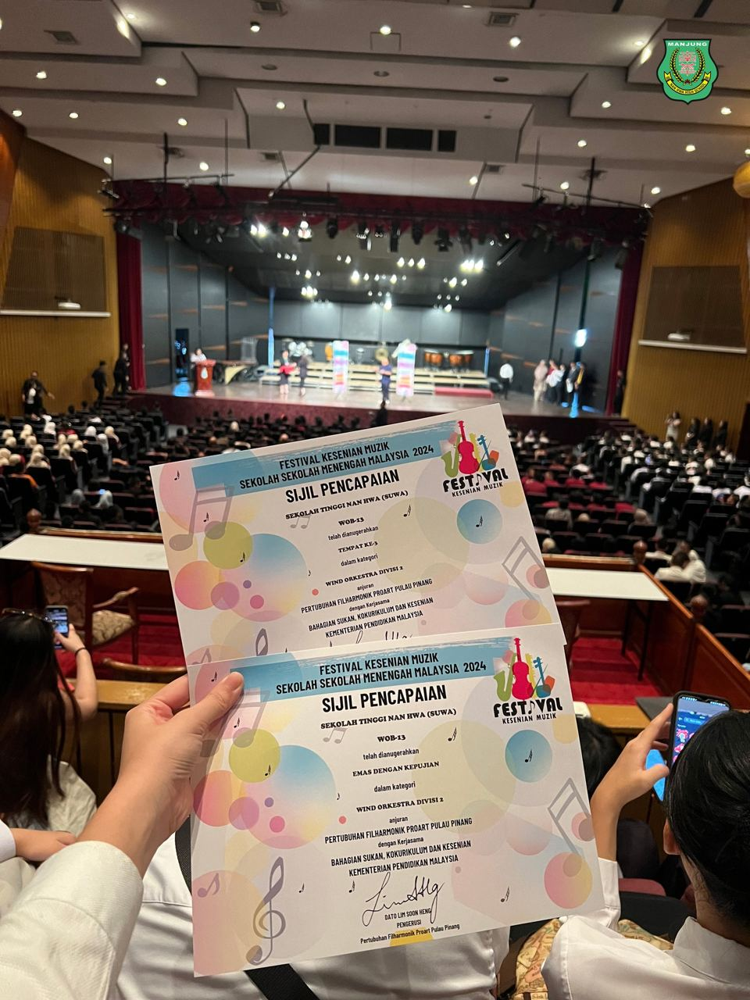
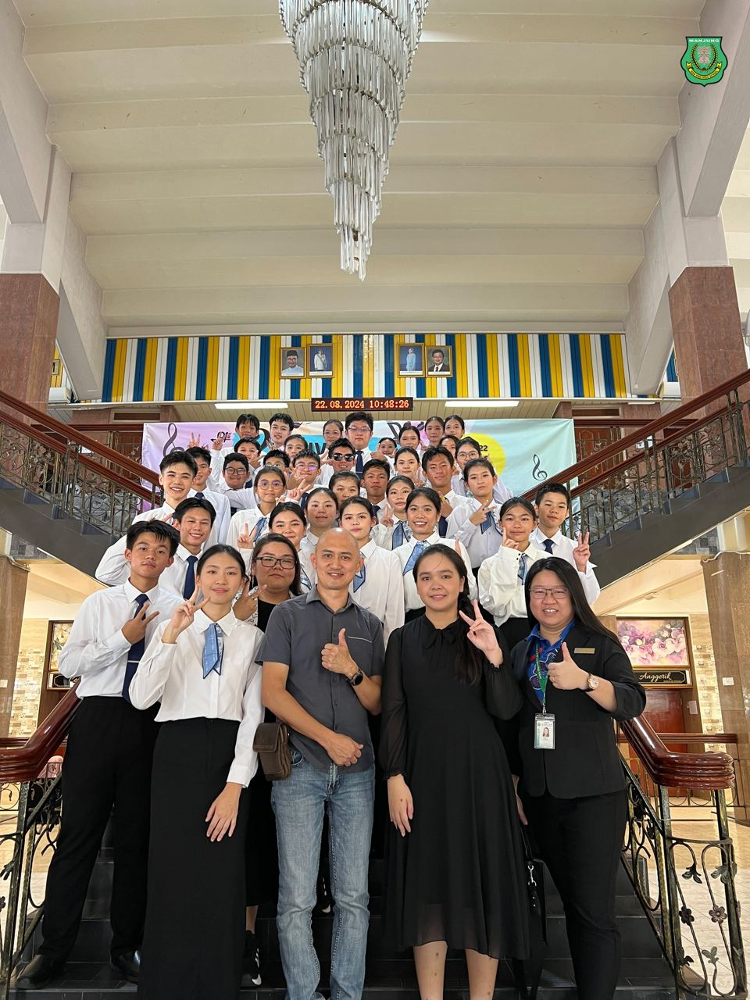
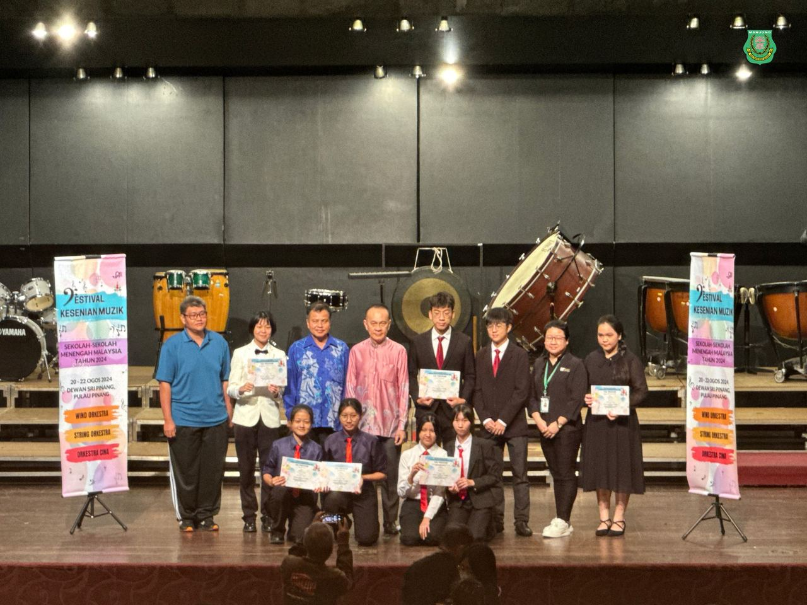
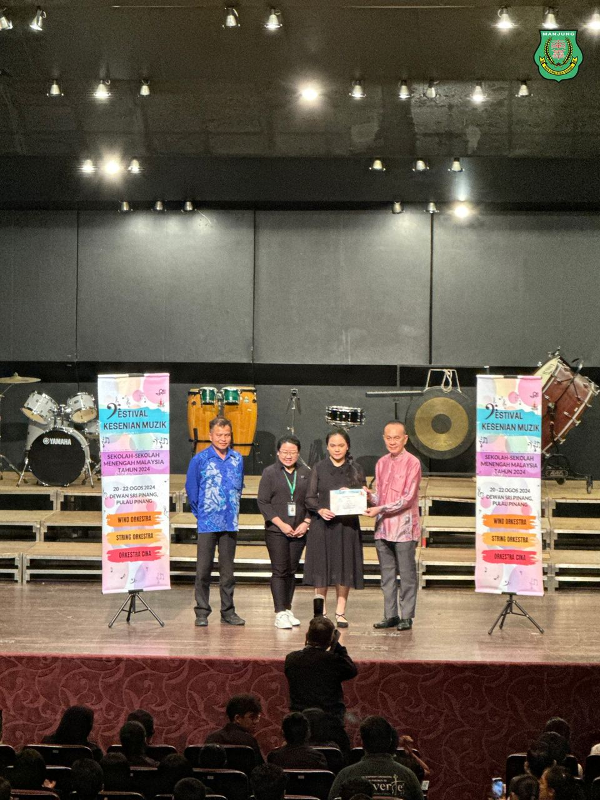
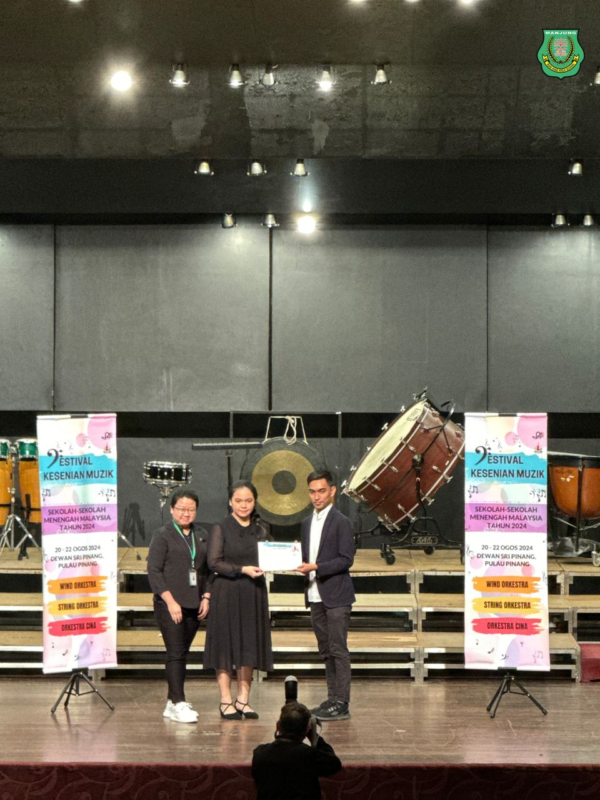

2024年全国音乐节比赛
2024年全国音乐节比赛
南华独中连夺两项奖项
南华独中管乐团于日前由由Pertubuhan Pro Art Filharmonik Pulau Pinang主办举行的2024年全国音乐节比赛中表现出色，荣获管乐组全场第三名及荣誉金奖，为校争光。
校长陈丽冰博士对本校管乐团给予高度评价和鼓励，并引用"不操千曲而后晓声，观千剑而后识器。"勉励学生们要以拼搏不屈的精神，不断提升自己的技艺，为未来站上更广阔的舞台做好准备。陈校长表示，校方将继续支持和发展美育，为学生提供更多展示才华的机会。
管乐团指导老师胡昌霖教练认为这次的成功源于团队的不懈努力，并肯定了管乐团学生在过去几个月里付出了巨大的努力，学生不仅在技术上有了显著提高，更重要的是培养了团队合作精神。这次的成绩是南华独中管乐团全体师生努力的最好回报。
负责老师林欣宜首先肯定了管乐团学生辛苦备赛的过程，进而为学生们的进步和热情给予认可。林老师表示这次比赛不仅提高了管乐团整体的音乐水平，更增强了团队的自信心和精神。







